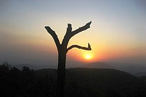

NETARHAT |
|
TOWN |
|
|  | |
| Country | Inida |
|---|---|
| State | Jharkhand |
| District | Latehar |
| Block | Mahuadnar |
| Elevation | 1,071 m(3,514 ft) |
| Language Offical |
Hindi, Nagpuri , Kurukh |
| Time Zone | UTC +5:30 (IST) |
| Vechicle Registration | JH-19 |
| Website | latehar.nic.in |
Netarhar is a hill station in Lather district in the indian state of Jharkhand . it is also referred to as the "queen of Chotanagpur" , and is a hill station . The town is also famous for Netarhat Residential School , setup in 1954.
Netarhat is located at 23.4833°N 84.2667°E, at a height of 1,071 metres (3,514 ft).
It is a plateau covered with thick forest. Located in the pat region of Chota Nagpur plateau , Netarhat plateau is about 4 miles (6.4km) long and 2.5miles (4.0km) board . It consits of Crystalline rocks and has a summit capped iwth sandstone trap or laterrite .REgion fo Netarhat is covered with Sal , Kendu , Mahua and Eucalyptus . The highest point is 3,696 feet (1,127).
It is located 156 Killometers (97mi) west of Ranchi , the state captial . It is 118 kilometers (73 mi) from Daltonganj . it si located 82 killonmeters (51 mi) from district headquater Latehar .
Netarhat is known for its sunrises and sunsets during the summer months. it is loacted within forests whicih have varied flora and fauna .
Netarhat has several places of tourist interests:
• Upper Gharhri Falls is situated 4 km away from Netarhat.
•Lodh Falls is the highest waterfall of jharkand and 21st higihest in India . This waterfall is situated at 70 km auay form Netarhat and in the forest of Sal .
•Nahuadanr Wolf Snactuary is the lone sancturay in India made for the protection of wolves and manily consists of indian wolves.
• Magnoila point , it is 10 km away form Netarhat and is known for its sunset .
• Sunrise point is situated in Netarhat and known for its sunrise at mornings .
• Lower Ghaghri Falls It is situated 10km away from Netarhat and is known for its Waterfall.
• Koel river View Point is 3 km from Netarhat .
• Suga Bandh Falls is situated at 70 Km away from Netarhat and is a picnic spot for Locals .
• Sadni Falls is 35 km from Netarhat .
• Betla Natoinal Park is situated at 94 km away from the place and known among the first national parks in india to become a tiger reserve udner project Tiger(Palamu Tiger Reserve) , 64 km away from Netarhat . It also houses tow historic forts of Chero kings .
• Netarhat Residential School , Boarding School and one of the few modern "Gurukuls " left in india.
• Pear Orchards and Pine Forests are intiative of local Forest Department and they planted a lot of trees in the place.
Netarhat VIdyalaya Is a residential public school set up in 1954 . It sits on over 780 arcs.
There is another academy of police training college located in jharkhand police named as jungle warfare School , or JWFS in short. It has a big campus spreading over 192 acres near Upper Ghagri waterfall and was established in 2008 to train state police especially on the lines of Armed Forces to fight and coutner growing naxal insurgency in the state. It also holds a CIAT . i.e Counter insurgency and Anti Terroist training School. Short term courses are taken by state forces to excel in jungle warfare tactics and counter insurgency and naxalism .Later the school was upgraded to train police recruit constables and also to train promotee upgraded refreshemnt courses for Head constables. The size of bath is almost 890.
There is one more school the ST Xavier's Boarding Shool in hill station .